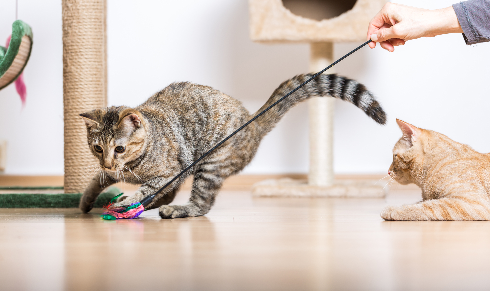

Cats are better than dogs because:
They don't require daily walks.

Although you can for sure walk your cat which is very wholesome, cats don't need to be walked daily for exercise. Cats are able to get their daily exercise from playing indoors with toys which a lot of pet owners prefer. Dogs need to be walked regardless of how cold or hot it is outside. Dogs especialy require more excercise when living in apartments which cats don't.
Cats are cheaper to own.
Owning a pet is expensive regardless but, vet bills for cats are cheaper. Cats don't need as much maitenance or care like dogs resulting in cheaper and fewer vet bills. Cats don't require as much food, water, toys, and space like dogs do resulting in much lower costs when owning one.
No Dogs Are Better Trust Me
I have so many reasons why Dogs are better than cats! Dogs are the most loyal creatures alive, they will stay by your side no matter what if you treat them right.
Take the movie hachi for example, he senses his owner won't be coming home and tries his hardest to get him to stay than after the human dies he stays where he used to get off from work until he dies.
This was based on a true story of an actual dog and I've heard many tails (pun intended) of even more just like Hachi.
You also can't deny their cuteness!!! I mean have you seen puppies and their sweet dorky faces?? Cats are alright but these guys are angels!
Dogs not only are the sweetest little guys they're also super affectionate! Dogs love pets and always want to be around their favourite people and while they may need a little more care than
cats in the long run it's worth it. Dogs help with mental health as well and not just for companionship, having a dog forces you to go on daily walks which is a great motivators for those who
wouldn't normally get out. They are reliable little fuzzballs that burst with energy while cats are low energy and sassy creatures.